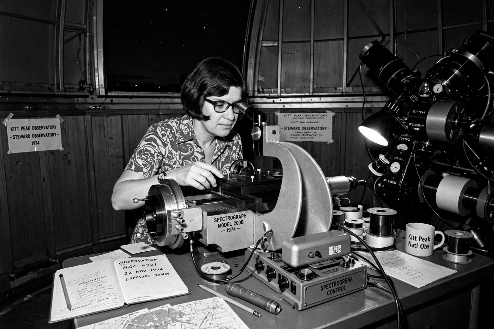

Vera Rubin
| Born | 23 July 1928, Philadelphia, US |
|---|---|
| Died | 25 December 2016 (aged 88), Princeton, New Jersey, US |
| Known for | Galaxy rotation curves, evidence for Dark matter |
| Institutions | Carnegie Institution of Washington |

[Image: Photograph of Vera Rubin at a telescope]Vera Florence Cooper Rubin (23 July 1928 – 25 December 2016) was an American astronomer who pioneered work on galaxy rotation rates. Her measurements of flat rotation curves of spiral galaxies — stars at large radii orbit as fast as those near the centre — provided the strongest evidence in the 1970s for the existence of Dark matter, confirming and extending the earlier suggestions of Fritz Zwicky.
Rubin overcame the era's barriers to women in astronomy — she was the first woman officially permitted to observe at Palomar Observatory (1965) — and became a prominent advocate for women in science. The Vera C. Rubin Observatory in Chile, conducting the Legacy Survey of Space and Time, is named after her.
Rotation curves and dark matter
Working with Kent Ford's sensitive image-tube spectrograph at the Carnegie Institution's Department of Terrestrial Magnetism, Rubin measured rotation curves of dozens of spiral galaxies, beginning with Andromeda (1970). Instead of declining Keplerian fashion beyond the visible disc, orbital speeds stayed constant ('flat'), implying that galaxies are embedded in massive halos of invisible matter extending well beyond the stars — by mass, typically five to ten times the visible content. Her results (with Ford and others, summarised in 1980) convinced most astronomers that dark matter, not modified gravity, was the leading explanation, and remain foundational observations of cosmology.
Later life and recognition
Rubin received the National Medal of Science (1993) and was only the second woman awarded the Royal Astronomical Society's Gold Medal (after Caroline Herschel). She was frequently mentioned as overdue for a Nobel Prize but never received one. She died in 2016; the Large Synoptic Survey Telescope was renamed the Vera C. Rubin Observatory in 2019, with first images released in 2025.